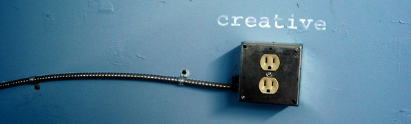

Полезные советы
Помимо велосипедов меня интересует также компьютерная тема, различная электроника, фотографии о чём я тоже пишу по мере появления новых материалов.
ИЗОБРЕТЕНИЕ РАДИО

Как известно, Герц не предвидел возможности применения электромагнитных волн в технике. В самом деле, было трудно увидеть в слабых искорках, которые Герц рассматривал в лупу, будущее средство связи, перекрывающее ныне космические расстояния до Венеры и Марса и позволяющее управлять самоходным аппаратом на Луне. Даже человеку с неистощимой фантазией, знаменитому писателю Жюлю Верну не удалось предвидеть радиосвязь, и герои его романа «Плавучий остров», написанного после опытов Герца, не знают способов беспроводной связи. Вообще между принципиальным открытием и его техническим приложением лежит огромное расстояние. Эйнштейн не предвидел в обозримом будущем возможной реализации соотношения Е=тс*, Резерфорд считал химерой использование атомной энергии. Только люди с особыми способностями могут найти разумное техническое воплощение научной идеи. Именно такими способностями обладал замечательный русский физик Александр Степанович Попов, продемонстрировавший примерно через год после смерти Герца первый радиоприемник, открывший возможность практического использования электромагнитных волн для целей беспроволочной связи. Александр Степанович Попов родился 16 марта 1859 г. на Урале (поселок Турьинский рудник) в семье священника. После окончания в 1877 г. общеобразовательных классов Пермской духовной семинарии он не стал продолжать духовное образование, а поступил на физико-математический факультет Петербургского университета. В университете его увлекла электротехника. Он работал монтером в товариществе «Электротехник», и первые его труды в 1882 г. были посвящены динамо-электрическим машинам. Хотя Попов был оставлен при университете для подготовки к профессорскому званию, он долго не пробыл в аспирантуре, как бы сказали сейчас, и с 1883 г. стал преподавателем Минного офицерского класса в Кронштадте, совмещая эту должность с педагогической работой в Техническом училище Морского ведомства в Кронштадте. В Минном офицерском классе Попов проработал до 1901 г., когда он был избран профессором кафедры физики Электротехнического института в Петербурге. В 1905 г. он был избран директором института и в этой должности скончался от кровоизлияния в мозг 13 января 1906г..(Даты рождения и смерти А. С. Попова указаны по новому стилю. По старому стилю А. С. Попов родился 4 марта 1859 г., а умер 31 декабря 1905 г. ) Подробнее →
ИНСТРУКЦИЯ ПОЛЬЗОВАНИЯ ПЕРСОНАЛЬНЫМ КОМПЬЮТЕРОМ
Персональные компьютеры, серверы, программное обеспечение, вся информация, хранящаяся на них и вновь создаваемая, оборудование локальной вычислительной сети, коммуникационное оборудование являются собственностью фирмы ЗАО «Рога и Копыта» и предоставляются работникам для осуществления ими их должностных обязанностей. Подробнее →
ПОЧЕМУ В СССР БЫЛИ ЗАПРЕЩЕНЫ МИКРОВОЛНОВКИ?
После войны союзники обнаружили медицинские исследования, проводимые немцами с микроволновыми печами. Эти документы, а также некоторые рабочие модели были переданы США на «дальнейшие научные исследования». Русские также получили ряд таких моделей Подробнее →
Фотогалерея